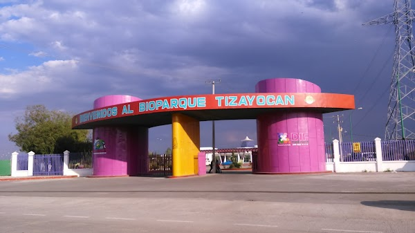

Parroquia de San Juan Bautista
Construida en el siglo XVI, la Parroquia de San Juan Bautista es uno de los principales atractivos turísticos de Tizayuca. Su fachada de estilo barroco y su torre de dos cuerpos son un deleite para la vista.

Parque Ecológico
El Parque Ecológico de Tizayuca es un espacio ideal para disfrutar de la naturaleza. Cuenta con áreas verdes, juegos infantiles y una pista para correr. Además, es un lugar perfecto para hacer un picnic en familia.